Almost every inference benchmark you have seen sends independent requests of a fixed shape. Agentic traffic is not that: it is one long conversation that fans out into subagents, re-sends a 140k-token prefix on every turn, and spends 95% of its tokens reading cache it wrote itself. AgentX is SemiAnalysis's attempt to benchmark that workload honestly — by recording real Claude Code sessions through an opt-in proxy, stripping every byte of content out of them, and replaying what remains as a dependency graph. This note walks the whole methodology, and pays particular attention to the parts that are hard: how you replay a session you are not allowed to read, why "concurrency" stops meaning what you think, and the two knobs they had to add to serving engines before the numbers could be compared at all. 여러분이 본 대부분의 추론 벤치마크는 정해진 모양의 독립적인 요청을 쏜다. 에이전트 트래픽은 그렇지 않다. 하나의 긴 대화가 서브에이전트로 갈라지고, 매 턴 14만 토큰짜리 프리픽스를 다시 보내며, 토큰의 95%를 자기가 쓴 캐시를 읽는 데 쓴다. AgentX 는 그 워크로드를 정직하게 재는 SemiAnalysis 의 시도다 — 실제 Claude Code 세션을 옵트인 프록시로 기록하고, 내용은 한 바이트도 남기지 않고 벗겨낸 뒤, 남은 것을 의존성 그래프로 재생한다. 이 노트는 방법론 전체를 따라가되 어려운 부분에 특히 공을 들인다. 읽을 수 없는 세션을 어떻게 재생하는가, 왜 "동시성" 이 생각하던 의미를 잃는가, 그리고 숫자를 비교라도 하려면 서빙 엔진에 먼저 넣어야 했던 손잡이 두 개.
Start with the single most striking number on the whole page. Here is the corpus SemiAnalysis collected before they narrowed it down to the published set. 이 페이지 전체에서 가장 인상적인 숫자 하나로 시작하자. 공개 세트로 좁히기 전에 SemiAnalysis 가 모은 코퍼스다.
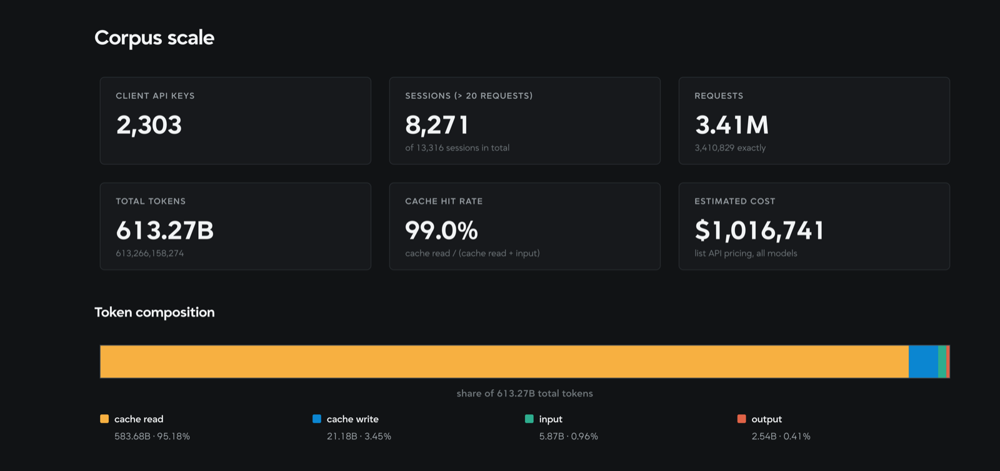
Corpus snapshot used during dataset selection. The displayed cost is a list-price estimate for this snapshot; it is not a benchmark output. Figure © SemiAnalysis, from the AgentX methodology page.데이터셋 선별 과정에서 쓴 코퍼스 스냅샷. 표시된 비용은 이 스냅샷에 대한 정가 기준 추정이며 벤치마크 결과가 아니다. 그림 © SemiAnalysis, 출처: AgentX 방법론 페이지.
The NVIDIA Dynamo project's load generator. AgentX ships its traces in the WEKA trace format that AIPerf consumes, so the replay engine is off-the-shelf and auditable rather than a bespoke harness.NVIDIA Dynamo 프로젝트의 부하 생성기. AgentX 는 트레이스를 AIPerf 가 읽는 WEKA trace 포맷으로 배포하므로, 재생 엔진이 자체 제작 하네스가 아니라 기성품이고 감사 가능하다.
Claude Code can spawn helper agents that run in parallel and report back. The main agent's requests form one chain; each subagent forms its own, and they rejoin.Claude Code 는 병렬로 돌다가 결과를 보고하는 보조 에이전트를 띄울 수 있다. 메인 에이전트의 요청이 한 사슬을 이루고, 서브에이전트마다 자기 사슬을 이룬 뒤 다시 합류한다.
Output tokens per second per user — how fast the stream feels to one person. The counterpart to throughput per chip, and the axis you trade against it.사용자 1인당 초당 출력 토큰 — 한 사람에게 스트림이 얼마나 빠르게 느껴지는가. 칩당 throughput 의 짝이자, 그것과 맞바꾸는 축이다.
Participants opt in to an HTTP proxy. It records request arrival and completion times, input and output token counts, conversation IDs, and subagent IDs. The published corpus does not contain prompts, source code, tool arguments, or tool results — which immediately raises the question the rest of this section answers: if you kept none of the content, what exactly are you replaying? 참가자가 HTTP 프록시에 옵트인한다. 프록시는 요청 도착·완료 시각, 입출력 토큰 수, 대화 ID, 서브에이전트 ID 를 기록한다. 공개 코퍼스에는 프롬프트·소스코드·툴 인자·툴 결과가 들어 있지 않다. 그러면 곧바로 이 절의 나머지가 답할 질문이 생긴다 — 내용을 하나도 안 남겼는데 대체 무엇을 재생한다는 것인가?
The proxy represents each input as session-scoped chained hashes in 64-token blocks. Matching block IDs preserve shared prefixes within a session. AIPerf then replaces the blocks with deterministic synthetic coding and tool-use tokens before replay. 프록시는 각 입력을 세션 범위의 연쇄 해시, 64토큰 블록 단위로 표현한다. 블록 ID 가 일치하면 그 세션 안의 공유 프리픽스가 보존된다. 재생 직전에 AIPerf 가 그 블록들을 결정적인 합성 코딩·툴 사용 토큰으로 바꿔치기한다.
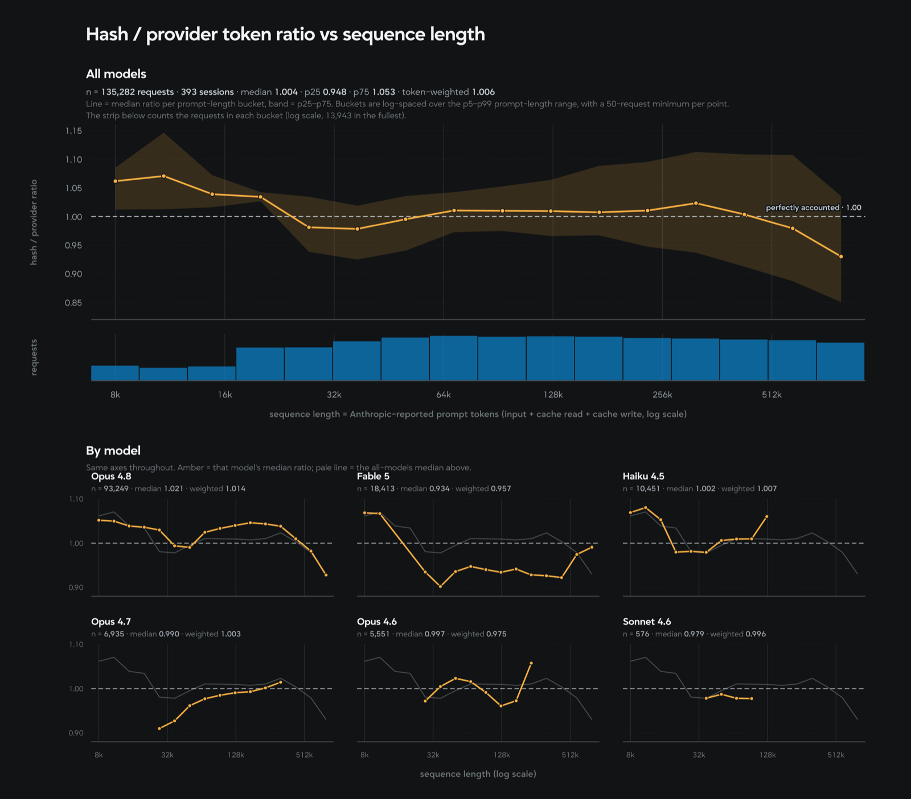
Across 135,282 requests from 393 sessions, the median reconstructed/provider token ratio is 1.004. Shaded bands report p25–p75, not a per-request bound. Figure © SemiAnalysis.393개 세션의 요청 135,282건에서 재구성/공급자 토큰 비율의 중앙값은 1.004. 음영은 p25–p75 이며 요청별 상한이 아니다. 그림 © SemiAnalysis.
A median ratio of 1.004 means the replayed request is about 0.4% longer than what the provider actually billed — close enough that length is not the thing distorting your result. Note the honesty of the caption: the shaded band is a distribution, not a guarantee. Individual requests can be further off. 중앙값 1.004 는 재생되는 요청이 공급자가 실제로 청구한 것보다 약 0.4% 길다는 뜻이다. 길이가 결과를 왜곡하는 요인은 아닐 만큼 가깝다. 캡션의 정직함도 눈여겨볼 만하다 — 음영대는 보장이 아니라 분포다. 개별 요청은 더 벗어날 수 있다.
A proxy sits outside the provider. It cannot see provider-side chat templates, proprietary tokenizers, server tools, encrypted reasoning content, or the exact token expansion of images and documents. AgentX approximates those with model-specific padding and deterministic placeholders — and states plainly that the placeholders and padding contain no original prompts, code, or tool payloads. 프록시는 공급자 바깥에 있다. 공급자 쪽 채팅 템플릿, 독자 토크나이저, 서버 툴, 암호화된 추론 콘텐츠, 이미지·문서의 정확한 토큰 전개는 볼 수 없다. AgentX 는 그것들을 모델별 패딩과 결정적 플레이스홀더로 근사하고, 그 패딩·플레이스홀더에 원본 프롬프트·코드·툴 페이로드가 없다고 분명히 밝힌다.
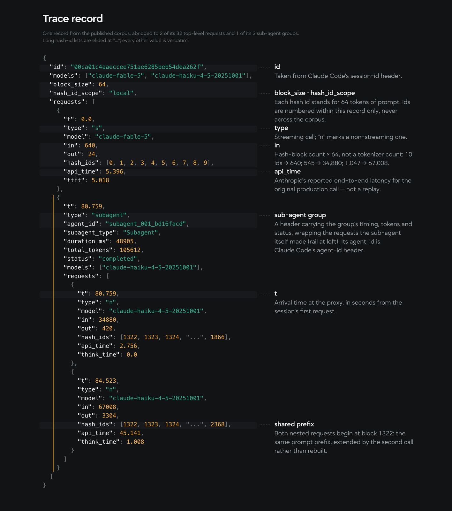
An abridged WEKA record. Block IDs are local to one session; repeated IDs identify the prompt prefix shared by later requests. Figure © SemiAnalysis.축약한 WEKA 레코드. 블록 ID 는 한 세션 안에서만 유효하며, ID 가 반복되면 뒤 요청들이 공유하는 프롬프트 프리픽스를 가리킨다. 그림 © SemiAnalysis.
This record is worth reading closely, because it is the entire input to everything downstream. Each request carries a timestamp t, an input count in, an output count out, an api_time, and a hash_ids array. Subagents appear as nested objects with their own agent_id, duration_ms, and request list. That is the whole language — five fields and a nesting rule.
이 레코드는 아래 모든 것의 유일한 입력이라 꼼꼼히 볼 가치가 있다. 요청마다 타임스탬프 t, 입력 수 in, 출력 수 out, api_time, 그리고 hash_ids 배열이 붙는다. 서브에이전트는 자기 agent_id·duration_ms·요청 목록을 가진 중첩 객체로 나타난다. 이게 언어의 전부다 — 필드 다섯 개와 중첩 규칙 하나.
The v1.0 release contains 393 sessions built on June 21, 2026. Selection rules: at least 20 requests per session, Claude Code 2.1.139 or newer, no more than 10 concurrent subagents. Processing removes exact duplicates, short classifier calls used for security monitoring or title generation, and requests whose reconstructed input exceeds 990k tokens. v1.0 릴리스는 2026년 6월 21일 기준 393개 세션이다. 선별 규칙 — 세션당 요청 20건 이상, Claude Code 2.1.139 이상, 동시 서브에이전트 10개 이하. 처리 과정에서 완전 중복, 보안 모니터링·제목 생성용 짧은 분류기 호출, 재구성 입력이 990k 토큰을 넘는 요청을 제거한다.
Two variants ship. The full variant keeps contexts up to 1M tokens. The 256k variant drops requests above its cap while retaining the relative timing and subagent overlap of what remains. Both use the WEKA trace format. 변형이 둘이다. full 은 컨텍스트를 1M 토큰까지 유지한다. 256k 는 상한을 넘는 요청을 버리되 남은 요청들의 상대적 타이밍과 서브에이전트 겹침은 유지한다. 둘 다 WEKA trace 포맷을 쓴다.
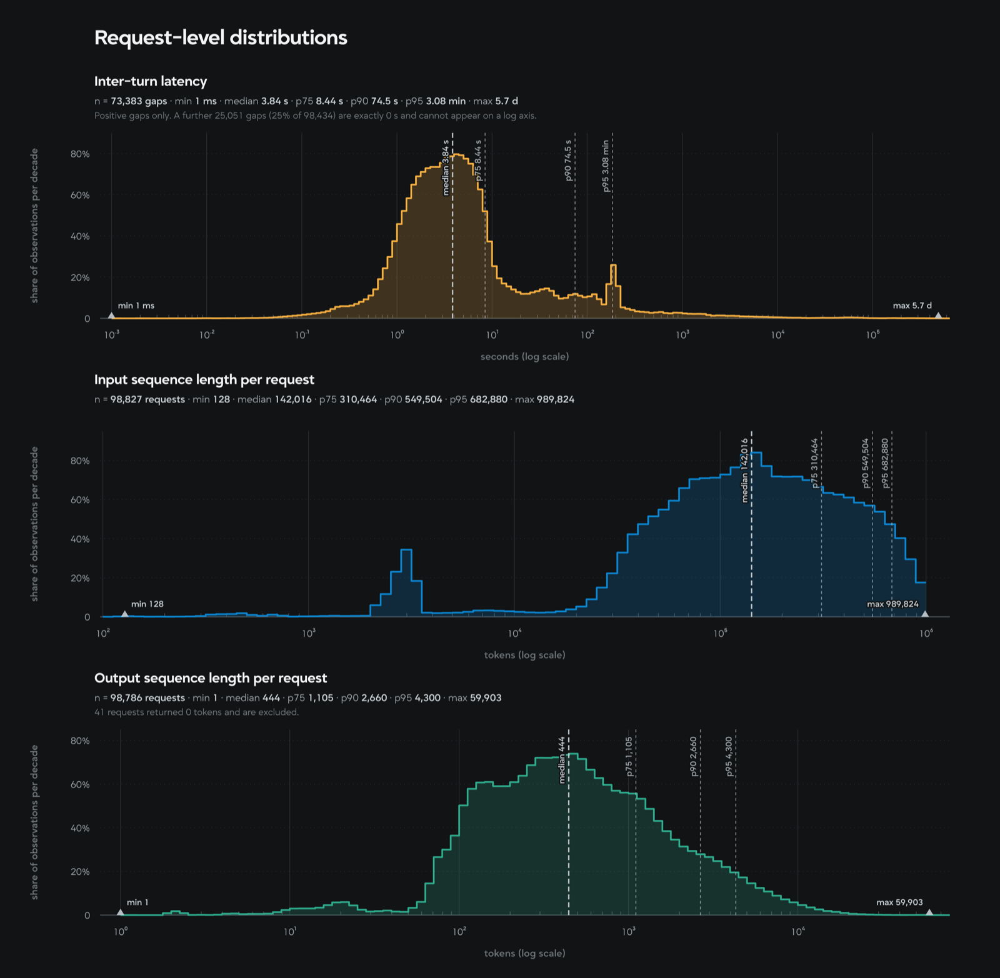
Request distributions in the published v1.0 corpus. The median request has 142,016 input tokens and 444 output tokens. Figure © SemiAnalysis.공개된 v1.0 코퍼스의 요청 분포. 중앙값 요청은 입력 142,016 토큰, 출력 444 토큰이다. 그림 © SemiAnalysis.
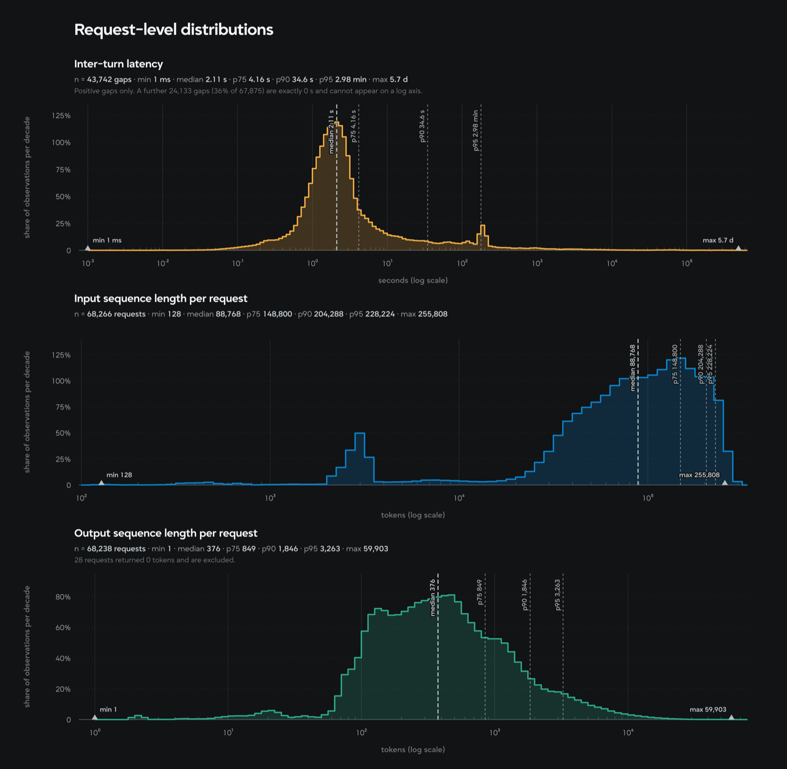
After requests above the 256k input cap are removed, the variant retains 68,266 requests. Median input length is 88,768 tokens; median output length is 376 tokens. Figure © SemiAnalysis.256k 입력 상한을 넘는 요청을 제거하면 68,266건이 남는다. 입력 중앙값 88,768 토큰, 출력 중앙값 376 토큰. 그림 © SemiAnalysis.
The 256k variant exists because not every system under test can serve a 1M-token context. Note what capping does to the median: input drops from 142k to 89k, but the ratio is still 236:1. Truncating the tail does not turn this into a normal workload. 256k 변형이 있는 이유는 시험 대상 시스템 전부가 1M 컨텍스트를 서빙할 수 있는 건 아니기 때문이다. 상한이 중앙값에 무엇을 하는지 보라 — 입력이 142k 에서 89k 로 내려가지만 비율은 여전히 236:1 이다. 꼬리를 자른다고 평범한 워크로드가 되지는 않는다.
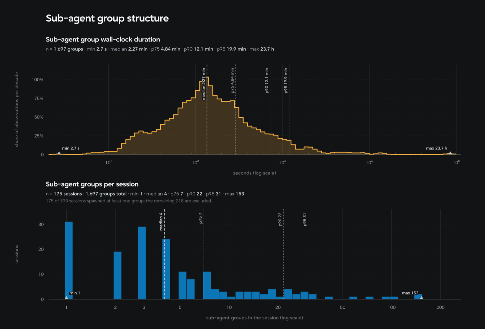
The 175 sessions with subagents contain 1,697 groups. Median group duration is 2.27 minutes, and the median participating session has four groups. Figure © SemiAnalysis.서브에이전트가 있는 175개 세션에 1,697개 그룹이 들어 있다. 그룹 지속시간 중앙값 2.27분, 참여 세션의 중앙값은 그룹 4개. 그림 © SemiAnalysis.
The 256k variant retains 1,697 subagent groups. Median duration is 2.27 minutes, and p95 duration is 18.5 minutes. Figure © SemiAnalysis.256k 변형도 서브에이전트 그룹 1,697개를 유지한다. 중앙값 2.27분, p95 는 18.5분. 그림 © SemiAnalysis.
Fewer than half the sessions (175 of 393) use subagents at all — but when they do, a group runs for 2.27 minutes at the median and 18.5 minutes at p95. That p95 is the number that matters for a serving system: it means a branch of the dependency graph can hold state open for a third of the entire profiling hour. 서브에이전트를 쓰는 세션은 절반이 안 된다(393개 중 175개). 그런데 쓰면 그룹 하나가 중앙값 2.27분, p95 18.5분을 돈다. 서빙 시스템 입장에서 중요한 건 그 p95 다 — 의존성 그래프의 한 가지가 프로파일링 1시간의 3분의 1 동안 상태를 열어 둘 수 있다는 뜻이니까.
AIPerf converts each trace into a directed acyclic graph. Main-agent requests form a linear chain. Subagent requests form separate chains that spawn after an eligible parent request and join before the next dependent main-agent request. One-off auxiliary requests can run without a join edge. AIPerf 는 트레이스마다 방향성 비순환 그래프를 만든다. 메인 에이전트 요청이 선형 사슬을 이룬다. 서브에이전트 요청은 별도 사슬을 이뤄, 자격을 갖춘 부모 요청 뒤에 spawn 되고 다음 의존 메인 요청 앞에서 join 한다. 일회성 보조 요청은 join 간선 없이 돌 수 있다.
The methodology page builds the vocabulary up case by case. Each figure shows the same three panels: the raw trace JSON on the left, the recorded timeline top-right, and the replay dependency graph AIPerf derives from it bottom-right. 방법론 페이지는 이 어휘를 사례별로 쌓아 올린다. 그림마다 같은 세 패널이 나온다 — 왼쪽 원본 트레이스 JSON, 오른쪽 위 기록된 타임라인, 오른쪽 아래 AIPerf 가 유도한 리플레이 의존성 그래프.
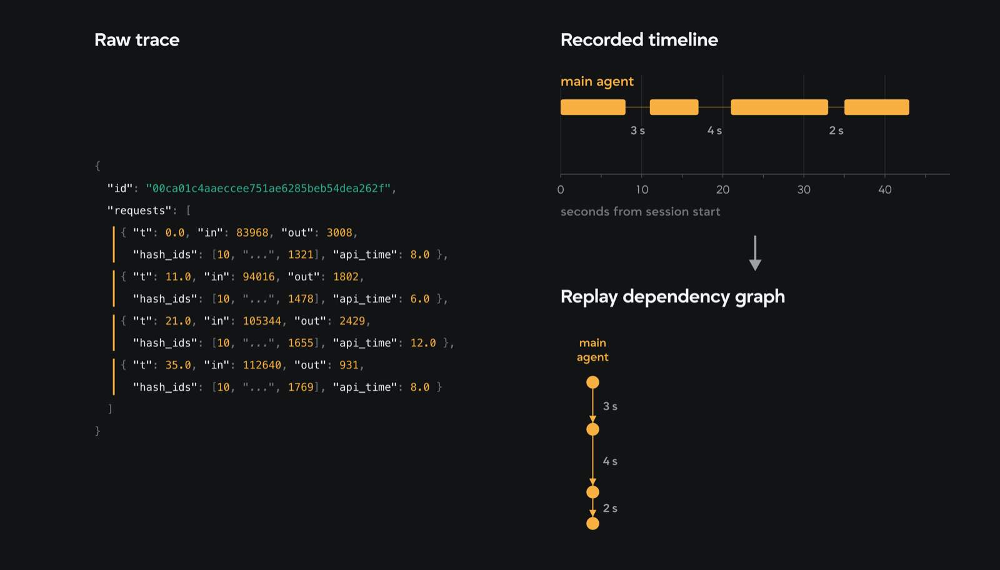
A session without subagents becomes a linear dependency chain with recorded inter-turn delays. Figure © SemiAnalysis.서브에이전트가 없는 세션은 기록된 턴 간 지연을 가진 선형 의존성 사슬이 된다. 그림 © SemiAnalysis.
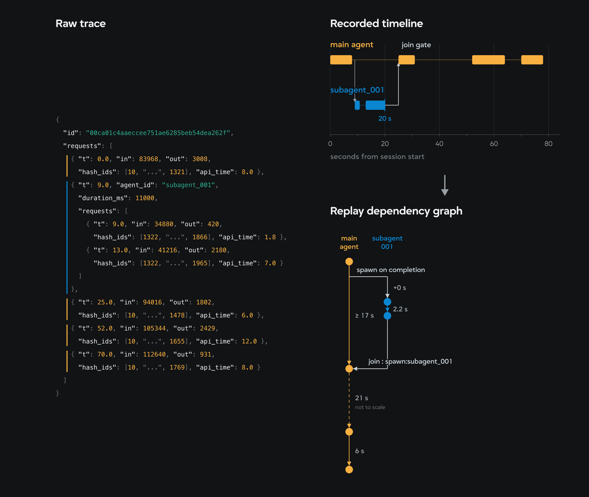
One subagent branch spawns after the first main request and joins before the next dependent main request. Figure © SemiAnalysis.서브에이전트 한 가지가 첫 메인 요청 뒤에 spawn 되어 다음 의존 메인 요청 앞에서 join 한다. 그림 © SemiAnalysis.
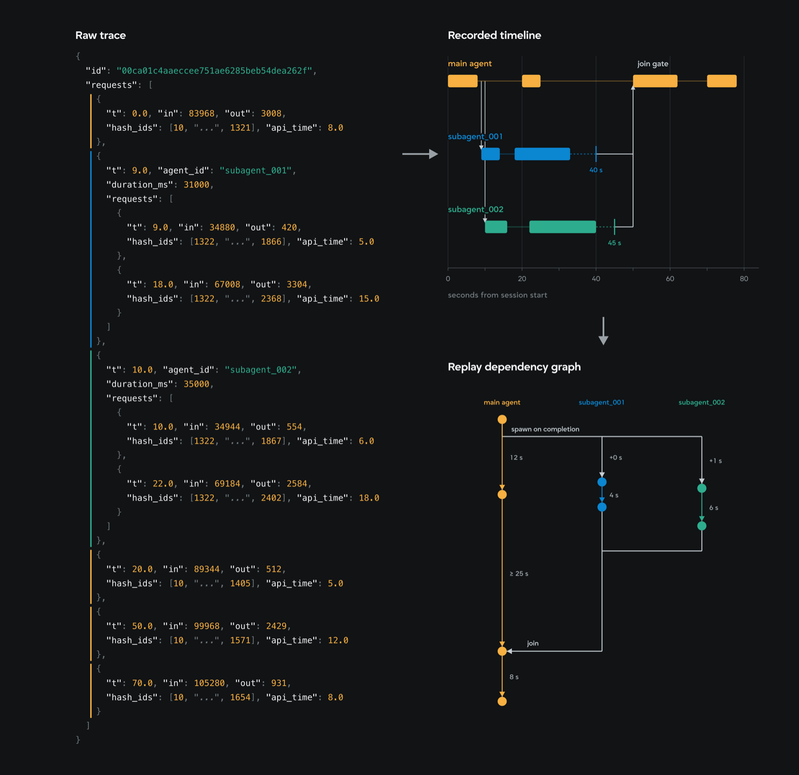
Two subagent chains spawn after the same main request and share one join gate before the main chain resumes. Figure © SemiAnalysis.서브에이전트 사슬 둘이 같은 메인 요청 뒤에 spawn 되어, 메인 사슬이 재개되기 전 하나의 join 게이트를 공유한다. 그림 © SemiAnalysis.
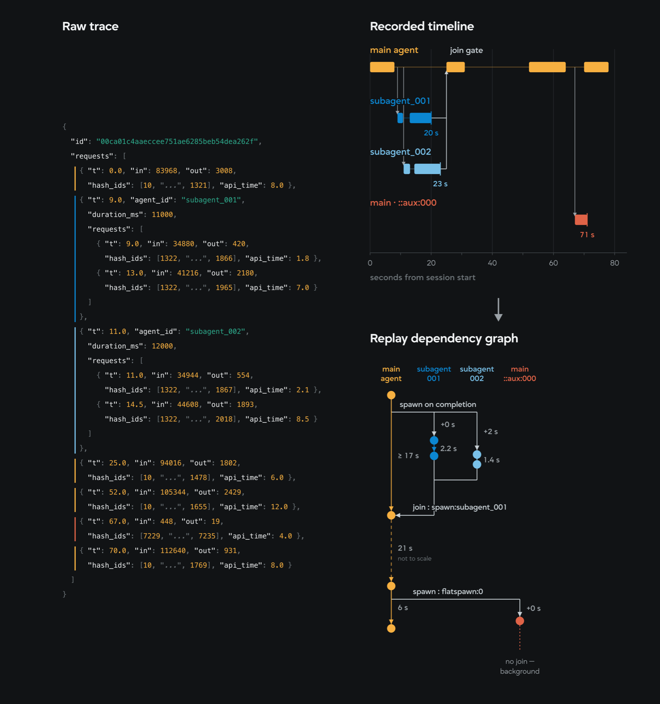
Parallel subagents share a join gate. The auxiliary request runs independently and has no join edge — in the graph panel it is the detached red branch marked "no join — background". Figure © SemiAnalysis.병렬 서브에이전트가 join 게이트를 공유한다. 보조 요청은 독립적으로 돌고 join 간선이 없다 — 그래프 패널에서 "no join — background" 라고 표시된 떨어진 빨간 가지다. 그림 © SemiAnalysis.
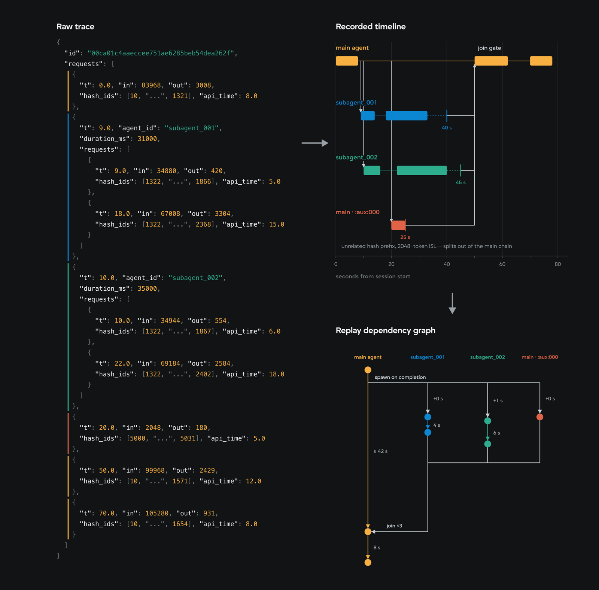
A flat-spawn group runs two subagent chains and one auxiliary request in parallel, then joins all three before the main chain resumes. Figure © SemiAnalysis.flat-spawn 그룹은 서브에이전트 사슬 둘과 보조 요청 하나를 병렬로 돌린 뒤, 메인 사슬 재개 전에 셋을 모두 join 한다. 그림 © SemiAnalysis.
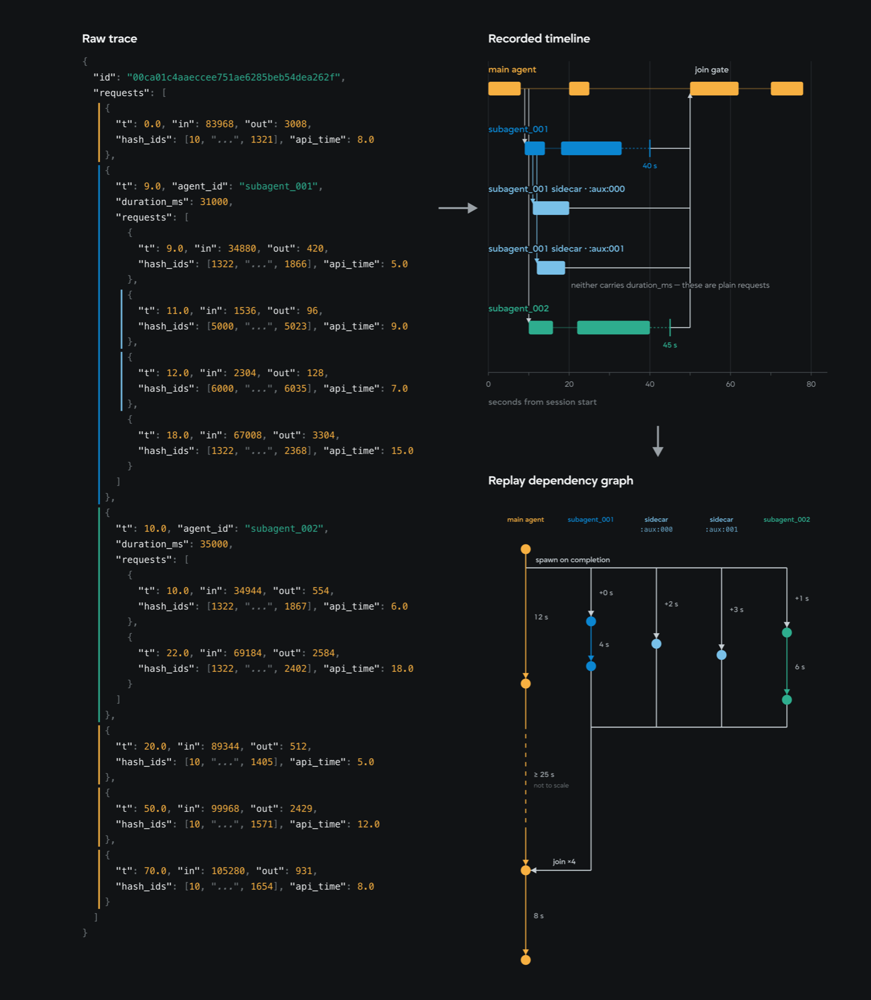
Two plain sidecar requests without duration metadata run beside two subagent chains. Replay waits for all four at one join. Figure © SemiAnalysis.duration 메타데이터가 없는 사이드카 요청 둘이 서브에이전트 사슬 둘 옆에서 돈다. 재생은 하나의 join 에서 넷을 모두 기다린다. 그림 © SemiAnalysis.
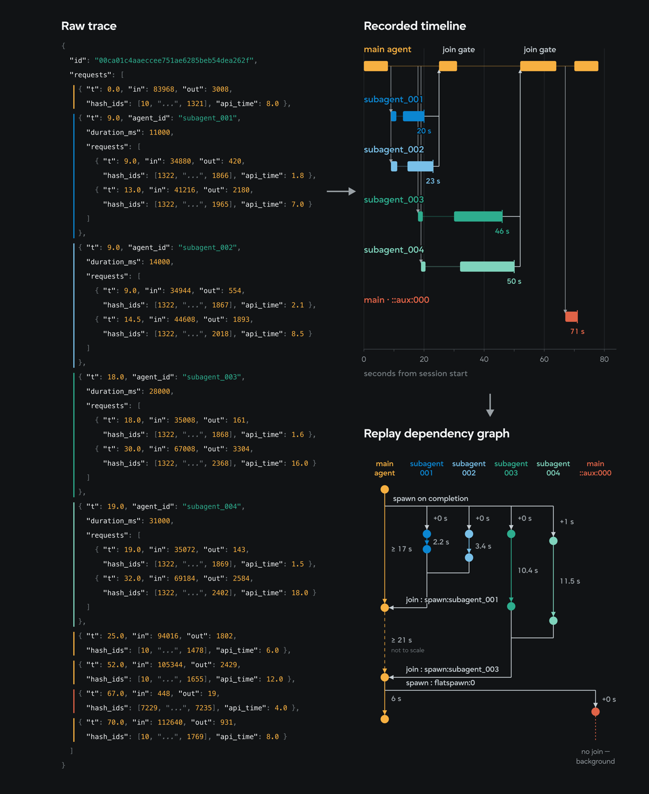
Multiple subagent groups retain their separate join points, while the auxiliary branch remains detached. Figure © SemiAnalysis.서브에이전트 그룹이 여럿이면 각자의 join 지점을 따로 유지하고, 보조 가지는 떨어진 채로 남는다. 그림 © SemiAnalysis.
In AgentX, concurrency is the number of live agent clients. It is not a fixed HTTP request batch, because one client can fan out into several subagent requests. The consequence is stated bluntly on the page: the server can have more in-flight requests than the configured client concurrency. AgentX 에서 동시성은 살아 있는 에이전트 클라이언트 수다. 고정된 HTTP 요청 배치가 아니다. 클라이언트 하나가 여러 서브에이전트 요청으로 갈라질 수 있기 때문이다. 그 결과를 페이지가 직설적으로 적는다 — 서버의 in-flight 요청 수가 설정한 클라이언트 동시성보다 많을 수 있다.
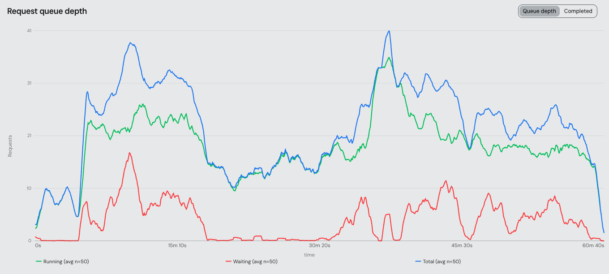
A 50-client replay produces a changing number of running and waiting HTTP requests as session graphs fan out and join. Figure © SemiAnalysis.50-클라이언트 재생에서, 세션 그래프가 갈라지고 합류함에 따라 실행 중·대기 중 HTTP 요청 수가 계속 변한다. 그림 © SemiAnalysis.
This matters when you compare AgentX numbers with anything else. "Concurrency 50" in a conventional benchmark means 50 requests are in flight. Here it means 50 sessions are alive, and the in-flight count is an emergent, time-varying quantity. Two systems tested at the same client concurrency can be running under quite different instantaneous batch sizes. AgentX 숫자를 다른 것과 비교할 때 이게 중요하다. 일반 벤치마크의 "동시성 50" 은 요청 50개가 in-flight 라는 뜻이다. 여기서는 세션 50개가 살아 있다는 뜻이고, in-flight 수는 시간에 따라 변하는 창발적 값이다. 같은 클라이언트 동시성에서 시험한 두 시스템이 서로 꽤 다른 순간 배치 크기로 돌고 있을 수 있다.
AgentX runs closed loop: a client submits its next eligible request after dependencies complete. The page then admits the consequence directly — faster systems progress farther through their sampled sessions during the same hour, so the exact request mix can vary, especially at low concurrency. AgentX 는 닫힌 루프로 돈다. 클라이언트는 의존성이 끝나면 다음 자격 요청을 낸다. 그리고 페이지가 그 결과를 직접 인정한다 — 빠른 시스템은 같은 1시간 동안 샘플된 세션을 더 멀리 진행하므로, 정확한 요청 구성이 달라질 수 있다. 특히 낮은 동시성에서.
Which is precisely what the page prescribes: results should report throughput with time to first token (TTFT) and interactivity. A single latency value does not describe the run. The Pareto curve is the intended output format. 그리고 그게 정확히 페이지가 처방하는 것이다 — 결과는 throughput 을 TTFT 및 interactivity 와 함께 보고해야 한다. 단일 지연 값으로는 실행을 설명할 수 없다. 파레토 곡선이 의도된 출력 형식이다.
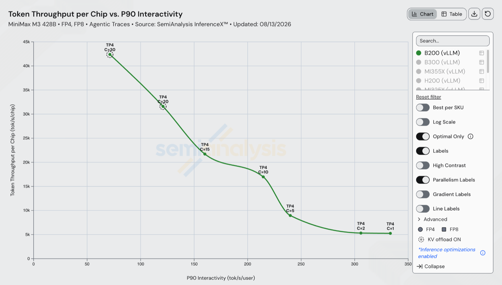
Each labeled point is a client-concurrency setting. Higher concurrency raises throughput while reducing per-client interactivity. MiniMax M3 428B · FP4, FP8 · agentic traces · B200 (vLLM) · TP4. Figure © SemiAnalysis.라벨이 붙은 점 하나하나가 클라이언트 동시성 설정이다. 동시성이 높아지면 throughput 이 오르고 클라이언트당 interactivity 는 떨어진다. MiniMax M3 428B · FP4, FP8 · 에이전트 트레이스 · B200 (vLLM) · TP4. 그림 © SemiAnalysis.
Read the endpoints: from C=1 to C=30 throughput per chip goes from roughly 5k to 42k tok/s — about 8× — while P90 interactivity falls from roughly 333 to 70 tok/s/user, about 4.8× worse. There is no single "performance" number hiding in there; there is a curve, and where you sit on it is a product decision.
양 끝을 보라. C=1 에서 C=30 으로 가면 칩당 throughput 이 약 5k 에서 42k tok/s 로 약 8배 오르고, P90 interactivity 는 약 333 에서 70 tok/s/user 로 약 4.8배 나빠진다. 저 안에 숨은 단일 "성능" 숫자는 없다. 곡선이 있고, 그 위 어디에 앉을지는 제품 결정이다.
C=20 and C=30. That is the offloading story showing up as a measured artifact rather than an argument: at low concurrency the working set fits in HBM and offload buys nothing, and past some concurrency the only way to keep going up the throughput axis is to put KV somewhere else.
저 차트의 점선 원 표식은 KV 오프로드 ON 이고, 정확히 throughput 이 가장 높은 두 점 C=20·C=30 에만 붙어 있다. 오프로딩 이야기가 주장이 아니라 측정된 흔적으로 나타난 것이다. 동시성이 낮을 땐 워킹셋이 HBM 에 들어가서 오프로드가 사줄 게 없고, 어느 동시성을 넘어서면 throughput 축을 계속 올라가는 유일한 방법이 KV 를 다른 데 두는 것이다.
If 95% of your token traffic is cache reads, then the state of the cache when the clock starts decides the result. Measure from cold and you are benchmarking prefill. Measure from warm and you are benchmarking the thing the workload actually does. AgentX spends a whole protocol on getting this right. 토큰 트래픽의 95%가 캐시 읽기라면, 시계가 시작될 때 캐시가 어떤 상태인지가 결과를 정한다. 차가운 상태에서 재면 prefill 을 벤치마킹하는 것이고, 데워진 상태에서 재면 이 워크로드가 실제로 하는 일을 재는 것이다. AgentX 는 이걸 제대로 하려고 프로토콜 하나를 통째로 쓴다.
| Step단계 | What happens무슨 일이 일어나나 |
|---|---|
| Seeded start point시드로 정한 시작점 | A fixed seed selects each replay start uniformly from 25% to 75% of the recorded session duration. Not the beginning — you want a session already in progress, because that is where the prefix is long.고정 시드가 각 재생 시작점을 기록된 세션 길이의 25%–75% 구간에서 균일하게 고른다. 맨 앞이 아니다 — 이미 진행 중인 세션이어야 프리픽스가 길기 때문이다. |
max_tokens=1 primer프라이머 |
A one-token request materializes the active main-agent and subagent prefixes — it forces the server to build the KV state without paying for generation.토큰 하나짜리 요청으로 활성 메인·서브에이전트 프리픽스를 실체화한다. 생성 비용을 치르지 않고 서버가 KV 상태를 만들게 강제하는 것이다. |
| 10 warmup requests per lane레인당 워밍업 요청 10건 | Each replay lane completes ten more requests before the measurement barrier opens.측정 배리어가 열리기 전에 각 재생 레인이 요청 10건을 더 끝낸다. |
| 1-hour profiling window1시간 프로파일링 창 | Only this window contributes reported metrics. Everything before it is setup.이 창만 보고 지표에 기여한다. 그 앞은 전부 준비 과정이다. |
| Cache-bust marker캐시 무효화 표식 | A unique marker is added to each recycled play so unrelated replays cannot accumulate a shared prefix.재활용되는 재생마다 고유 표식을 붙여, 서로 무관한 재생들이 공유 프리픽스를 쌓지 못하게 한다. |
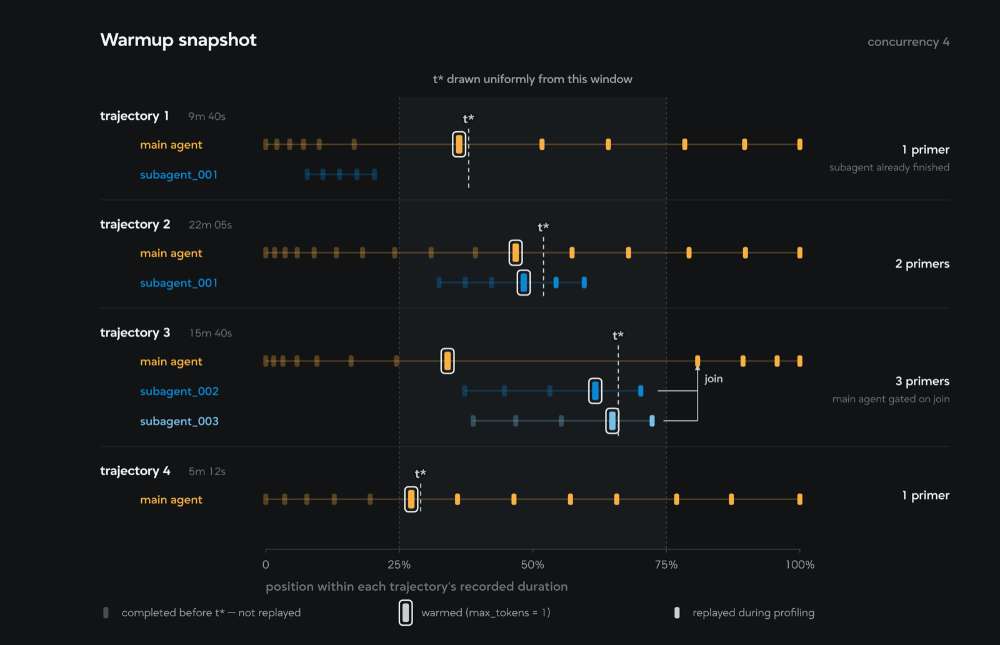
The fixed seed chooses t* within the shaded 25–75% interval. Primers establish the active prefix state before profiling. Figure © SemiAnalysis.고정 시드가 음영 처리된 25–75% 구간 안에서 t* 를 고른다. 프라이머가 프로파일링 전에 활성 프리픽스 상태를 세운다. 그림 © SemiAnalysis.
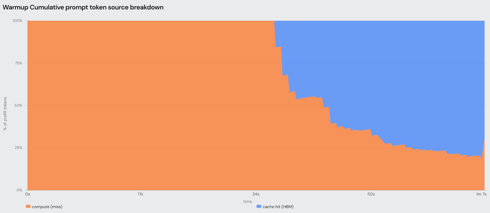
Warmup begins with cache misses, then materializes enough prefix state for most prompt tokens to hit HBM. Figure © SemiAnalysis.워밍업은 캐시 미스로 시작해, 대부분의 프롬프트 토큰이 HBM 에 히트할 만큼 프리픽스 상태를 실체화한다. 그림 © SemiAnalysis.
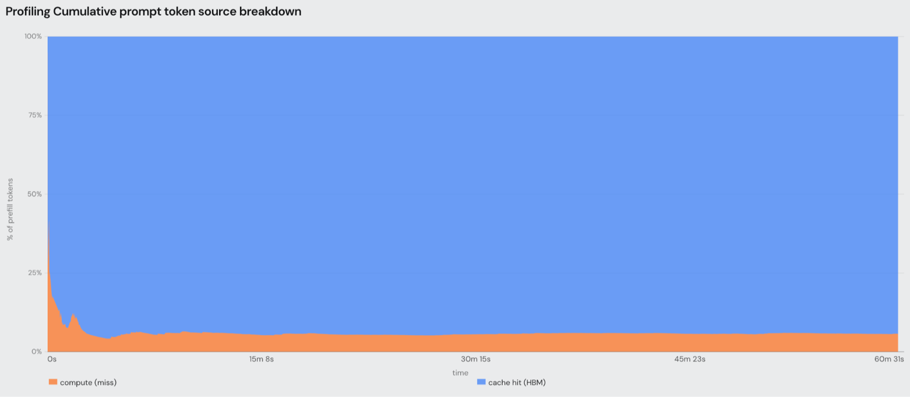
The measured hour starts after warmup. HBM cache hits dominate the prompt-token source throughout the window. Figure © SemiAnalysis.측정 시간은 워밍업 뒤에 시작한다. 창 내내 HBM 캐시 히트가 프롬프트 토큰 출처를 지배한다. 그림 © SemiAnalysis.
Put those two side by side and the protocol justifies itself. In warmup, compute-misses spike to ~40% of prompt tokens and then decay. In the measured hour the miss band is a thin sliver — roughly 5% — for the entire sixty minutes. That thin sliver is the workload. If you had started the clock at the left edge of the warmup chart, you would have published a number describing a state the production system spends almost none of its life in. 둘을 나란히 놓으면 프로토콜이 스스로를 정당화한다. 워밍업에서는 compute miss 가 프롬프트 토큰의 40% 가까이 치솟았다가 잦아든다. 측정 시간에는 miss 대역이 60분 내내 얇은 띠 — 대략 5% — 다. 그 얇은 띠가 곧 워크로드다. 워밍업 차트의 왼쪽 끝에서 시계를 시작했다면, 실제 시스템이 거의 머물지 않는 상태를 설명하는 숫자를 발표했을 것이다.
Here is a problem that only appears once you have decided to replay with synthetic tokens. Those tokens preserve input length and prefix structure, but their draft-token acceptance does not match natural model output. Speculative decoding works by having a small draft model propose tokens that the big model then accepts or rejects; how many get accepted depends on how predictable the text is. Feed a system deterministic filler and the acceptance rate is an artifact of the filler, not of the serving stack. 합성 토큰으로 재생하기로 정하는 순간에만 생기는 문제가 있다. 합성 토큰은 입력 길이와 프리픽스 구조는 보존하지만 초안 토큰 수용률(draft-token acceptance)은 자연스러운 모델 출력과 다르다. speculative decoding 은 작은 초안 모델이 토큰을 제안하면 큰 모델이 받아들이거나 거부하는 방식이고, 몇 개가 수용되는지는 텍스트가 얼마나 예측 가능한지에 달렸다. 결정적 채움 문자열을 먹이면 수용률은 서빙 스택이 아니라 그 채움 문자열의 산물이 된다.
AgentX's answer: use a measured acceptance length from the coding category of SPEED-Bench, for each model, speculative method, draft length, and thinking mode — and force it. AgentX 의 답 — SPEED-Bench 의 코딩 카테고리에서 실측한 수용 길이를 모델·speculative 방식·초안 길이·thinking 모드별로 가져와 강제한다.
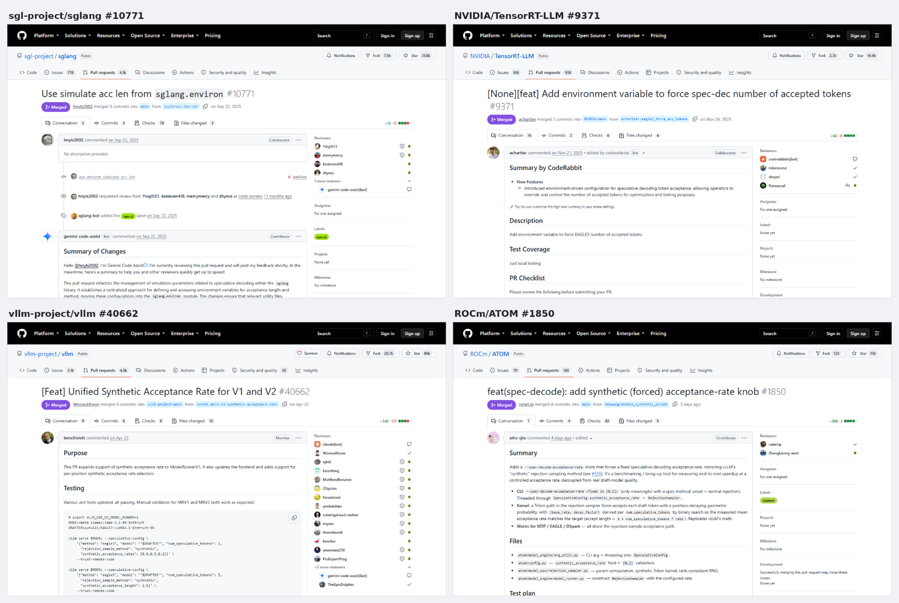
Merged engine changes expose the controls required to apply the same acceptance assumption across serving stacks. Figure © SemiAnalysis.병합된 엔진 변경들이 서빙 스택 전반에 동일한 수용 가정을 적용하는 데 필요한 제어를 노출한다. 그림 © SemiAnalysis.
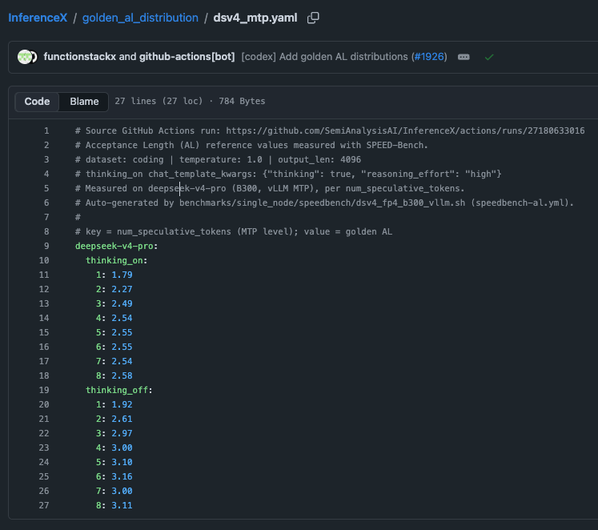
A versioned golden acceptance-length file records the SPEED-Bench measurement used for each draft length and thinking mode. Figure © SemiAnalysis.버전 관리되는 golden acceptance-length 파일이 초안 길이·thinking 모드별로 쓰인 SPEED-Bench 실측값을 기록한다. 그림 © SemiAnalysis.
KV-cache offload changes the capacity available to long-running sessions — and with a 320:1 input-to-output ratio, capacity is the whole game. So the rules have to be written down, or every vendor picks the DRAM configuration that flatters them. KV 캐시 오프로드는 장시간 세션이 쓸 수 있는 용량을 바꾼다. 입력:출력이 320:1 인 판에서는 용량이 전부다. 그래서 규칙을 명문화하지 않으면 벤더마다 자기에게 유리한 DRAM 구성을 고르게 된다.
Servers without a standardized DRAM configuration are capped, so an unusually fat host cannot buy an advantage that a buyer could not reproduce.표준 DRAM 구성이 없는 서버는 상한이 걸린다. 유별나게 큰 호스트가, 구매자가 재현할 수 없는 이점을 사지 못하게.
GB200 NVL72, GB300 NVL72, and TPUv7 may use what they ship with, because "what they ship with" is a well-defined thing.GB200 NVL72, GB300 NVL72, TPUv7 은 출하 구성을 그대로 쓸 수 있다. "출하 구성" 이 명확히 정의된 대상이기 때문이다.
A methodology is as much defined by its disclaimers as its procedures, and this one is unusually direct about them. 방법론은 절차만큼이나 면책 조항으로 정의된다. 이 문서는 그 점에서 유난히 직설적이다.
| Preserved보존되는 것 | Not reproduced재현되지 않는 것 |
|---|---|
| Client-visible request lengths클라이언트가 볼 수 있는 요청 길이 | Provider-hidden transformations — chat templates, proprietary tokenizers, server-side tools, encrypted reasoning content공급자 내부 변환 — 채팅 템플릿, 독자 토크나이저, 서버 측 툴, 암호화된 추론 콘텐츠 |
| Timing — arrival, completion, inter-turn delay타이밍 — 도착·완료·턴 간 지연 | The semantic content of the original session원본 세션의 의미 내용 |
| Branch structure — spawn and join topology분기 구조 — spawn·join 위상 | The tool-level cause of each branch각 분기의 툴 수준 원인 |
| KV-prefix reuseKV 프리픽스 재사용 | Model answer quality — stated flatly: "AgentX does not evaluate model answer quality."모델 답변 품질 — 단호하게 명시한다. "AgentX does not evaluate model answer quality." |